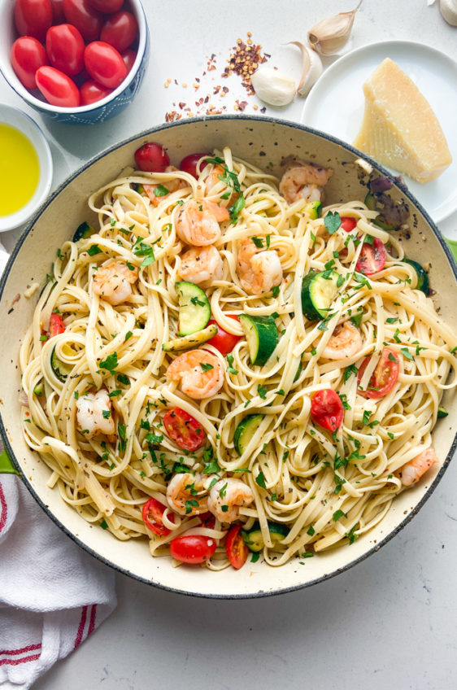

Pasta with shrimps

Description
Wonderful pasta with delicious cream sauce is easy to make, and very nutricious!
Only a handful of ingridients, some love and just a little bit of your time required to create this masterpiece, that chef Gordon Ramsay would be jealous of!
Ingredients:
- Pasta
- Cream
- Zuchini
- Spinach
- Garlic
- Onion
- Parmesan
- Shrimps
Steps:
- Boil pasta, according to the instructions
- Fry shrimps on the pan
- Add garlic and onion, wait until they are ready
- Add zuchini, spinach and wait 5 min
- Add cream and stir to combine all the ingridients
- Add parmesan
- Distribute pasta on the plates and put sauce with vegetables and shripms on top
- Add parmesan and enjoy!